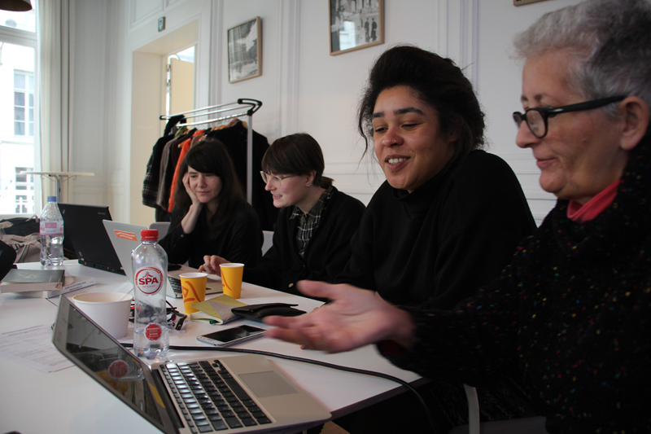
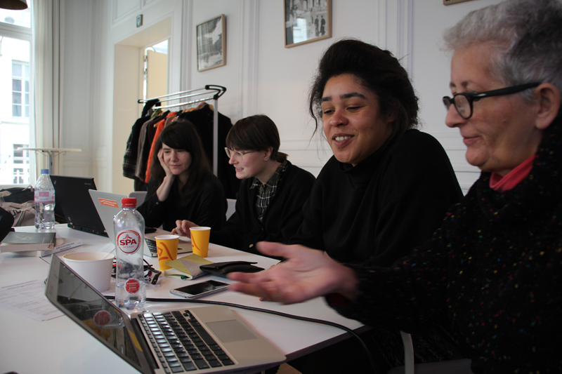

Pink Screens (in English)
Pink Screens
On the occasion of the Pink Screens Festival, we organized a special Just For The Record on lesbian and feminist filmmakers.
Together with filmmaker Anne Smolar and members of the Pink Screens’ team, we went back in the herstory of the festival to identify lesbian and feminist filmmakers who were part of the festival’s program. We ended up making a much longer list, still in progress! We looked at how these filmmakers are represented on Wikipedia, if they are, and how they are connected to each other.
Lesbian filmmakers
ANNE SMOLAR – a brief and subjective historical contextualization about access to information and databases on lesbian films and lesbian filmmakers from the 1970’s to the 2016’s
(starting after stonewall, pulp fiction and camp)
This contextualisation is very subjective, because it is about access to information and data, on lesbian and feminist filmmakers, from the 1980s – from when I started looking for this information. And of course it changed. Before the 80s, the prime source of information was by hearsay, or through informal gatherings and movie clubs, but it was very confidential. Except if you were close to those things…
If you have any contradiction, please feel free to add something.
In 1972 was the creation of Women Make Movies, which is an organization and non-profit american feminist which promotes films by women and provides production assistance. They started by training women to be filmmakers.
And then there were the first film festivals.
The first one was Frameline, in San Francisco, in 1977. It was free screenings of male gay experimental super-8 films, and it remained gay until 1982. Other festivals followed worldwide.


Frameline Festival, poster, 1977. More here.
Fred brought documentation on a gay movies festival in Flanders in 1978 (Antwerpen, Leuven). Its existence was still very confidential.
There were other places, like in the former lesbian bookshop in Brussels, Artemis, who organized screenings of lesbian movies.
The apparition of LGBT film festivals triggered a production of LGBT filmmakers.
After, there were books, book repertories, that you could get in bookshops – or order them because it was not so easy to get them in mainstream bookshops. The first one I know is “The Celluloid Closet”. It was focussed on Hollywood representations of the LGBT scene, and in this book gay works like when the word of men represents women and men, it’s gay encompassing lesbian. In it, lesbians are the “other”, a sub-category. Gay is a generic term, and lesbians are supposed to identify with representations of gay men, or to hollywood representations of sinful lesbians. Also because it’s created by four heterosexual male viewers, with a voyeuristic purpose, or using supposed deviancy to soothe male anxieties, about non-conforming or powerful women.
In 1982, there were the first distribution platforms in France. Light Cone It was mainly and experimental art distribution platform with a first attempt at LGBT connection.
And of course there was the Centre Simone de Beauvoir, created by Carole Roussopoulos, Delphine Seyrig and Ioana Wieder. It is now a database and a diffusion center, very active.
There were also some distributors who had a large catalogue of women’s films. Cinemin* and Gyn***story but they all disappeared, disolved or transformed.
In 1992, there was the first repertory on lesbian cinema, “Vampires and Violets” made by Andrea Weiss. For me it was really nice to get my hands on this book, because there was all this information and a critical viewpoint, feminist.
And then there was the internet!
From the years 90 until now, there have been many film festivals and a lot of talented filmmakers who contributed to change the media too.
So, that’s about it. I found this nice mistake on Wikipedia, on the Women’s Cinema page…
WORKSHOP
Books brought by Anne:
The St James’ Women Filmmakers Encyclopedia, 1999
How do I look? Queer Film and Video, 1991
The Celluloid Closet, 1981
Renegade Sisters, Bev Zalcock, 1998
The Bent Lens, Lisa Daniel, Claire Jackson, 1997
Cinéma d’Elles, Françoise Audé, 2003
Vampires and Violets, Andrea Weiss
… and more sources of inspiration for the editing session:
 

Safe space and healing food, by Cristian and Louise, who also contributed to Wikipedia during the workshop:
Empowering work session on the Wikipedia pages Women's cinema, Film director, Ulrike Ottinger, Delphine Seyrig, Carole Roussopoulos, Émilie Jouvet, Annik Leroy, Inés Suárez…

Soizic presents the Pink Screens programme of the evening.
THE END!
More here on the workshop’s page.
Pictures: Bruno Heyse, Loraine Furter and Eric Schrijver. Thank you so much!!